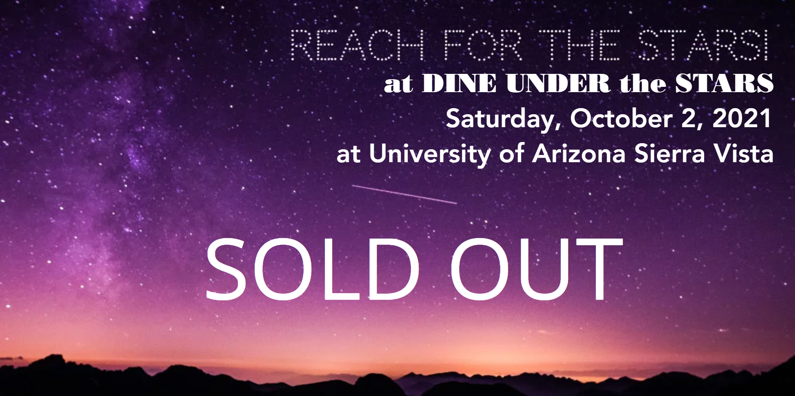

{{% youtube "Y7BPlWE1Aww" %}}

Dine Under the Stars is an annual fundraising event put on by the University South Foundation to raise money for CAST students. This year’s theme is “Reach For the Stars.” From the Foundation:
Enjoy dinner provided by Texas Roadhouse, Indochine Family Restaurant, and Bobke’s, live music by Desert Fever, stargazing through the Patterson Observatory Telescope, a great selection of silent & live auction items and more.
Since 2011 the Foundation has given out $675,000 in scholarships to support University of Arizona students at the Douglas and Sierra Vista campuses. It is only through the generosity of our local communities that this has been achieved.
Special thanks to this year’s sponsors who make the event possible: Pioneer Title Agency, ACE Hardware, Alma Dolores International Dance Centre, Cherry Creek Radio, Borowiec & Borowiec, PC – Attorneys at Law, Cardinal Pointe Financial Group, Cochise County Sheriff’s Assist Team, Desert Eagle Security, Grasshopper Landscaping, Groth Rutherford Properties LLC, Herald/Review Media, Huachuca Astronomy Club, ISC Consulting Group, KKYZ – 101.7 FM, Elsie and Paul MacMillan, New Frontier Animal Medical Center, Rainey Pain & Performance, Rutherford Diversified Properties LLC, Sierra Toyota, and Tierra Antigua – Maria Juvera.
Together, we are making a difference. Please join us as we come together with others passionate about education and the University of Arizona. For more information please call: 520-458-8278 x2129.
What does this have to do with the lab, you might ask? Why, space, of course!
As the Patterson Observatory is also owned by the University South Foundation and the lab completed the 3D scan of the observatory recently, we’ve teamed up again to provide attendees of the Dine Under the Stars fundraiser with a virtual reality accompaniment. Donors were not only given access to the 20” telescope in the observatory, but also to the Space Engine universe simulation software in the lab.
Here’s a recording by Reddit user BerkeA111 of just how amazing this experience is:
How mind-blowing is that? You can find the original video on Google Drive.
What else will we have? A way for folks to pick up a star or a planet and turn it around in their hands using the Merge Cube.
[::: {.cell-output-display}  :::
:::
](https://blog.airsquirrels.com/edtech/how-to-teach-virtual-and-augmented-reality-merge-cube-explorer)
We’ll also be providing a POAP NFT to anyone that stops by.
[::: {.cell-output-display}  :::
:::
](https://poap.gallery/event/8980)
See you there!
Citation
BibTeX citation:
@online{straight2021,
author = {Ryan Straight},
title = {Virtually {Dining} {Under} the {Stars}},
date = {2021-10-02},
url = {https://mavrxlab.org/news/2021-dine_under_the_stars},
langid = {en}
}
For attribution, please cite this work as:
Ryan Straight. 2021. “Virtually Dining Under the Stars.”
October 2, 2021. https://mavrxlab.org/news/2021-dine_under_the_stars.